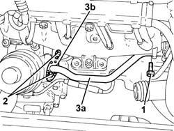
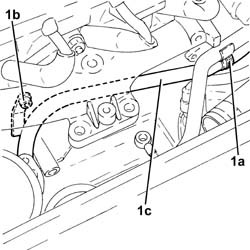

1088D26 rigid intake pipe to water pump - r+r for versions with a/c
- Path
- Procedures > 10 ENGINE UNIT > 1088 ENGINE COOLING > 1088D coolant hoses and sleeves > 1088D26 rigid intake pipe to water pump - r+r for versions with a/c
- Kind
- repair procedure (removal / refitting; the operation number is the code)
- Applies to
- all engines; all production periods
- Interactive page
- https://sloeber94.github.io/elrnDB-fPnd/en/#/2752548
Applies to: engines: 1.1; all production periods
Applies to: engines: 1.2 8v; all production periods
Applies to: engines: 1.3 JTD 16v; all production periods
 Removing
Removing
 Refitting
RefittingRemove the car from the ramps.
Disconnect the battery negative terminal.
1064A11 TURBOCHARGER with CATALYTIC CONVERTER - R.R.
1. Undo the bolts fixing the coolant supply pipe to the engine oil heat exchanger, crankcase side.
2. Undo the bolts fixing the coolant supply pipe to the engine oil heat exchanger, heat exchange side.
3. Move aside the pipe carrying coolant to the engine oil heat exchanger (3a) complete with seal (3b).

Applies to: engines: 1.3 JTD 16v; all production periods
1. Loosen the collar (1a) undo bolt (1b) and remove the water pump rigid inlet pipe (1c) complete with o-ring.

Applies to: engines: 1.3 JTD 16v; all production periods
Refitting
RemovingFit the water pump rigid inlet pipe, complete with O-ring, in position, then tighten the bolt and collar.
Fit the coolant intake pipe t the engine oil heat exchanger, complete with gasket, back in its housing and secure it by tightening the bolts to the heat exchanger.
Tighten the coolant inlet hose bolt to the engine oil heat exchanger, crankcase side.
1064A11 TURBOCHARGER with CATALYTIC CONVERTER - R.R.
Connect the battery negative terminal.
Remove the car from the ramps.